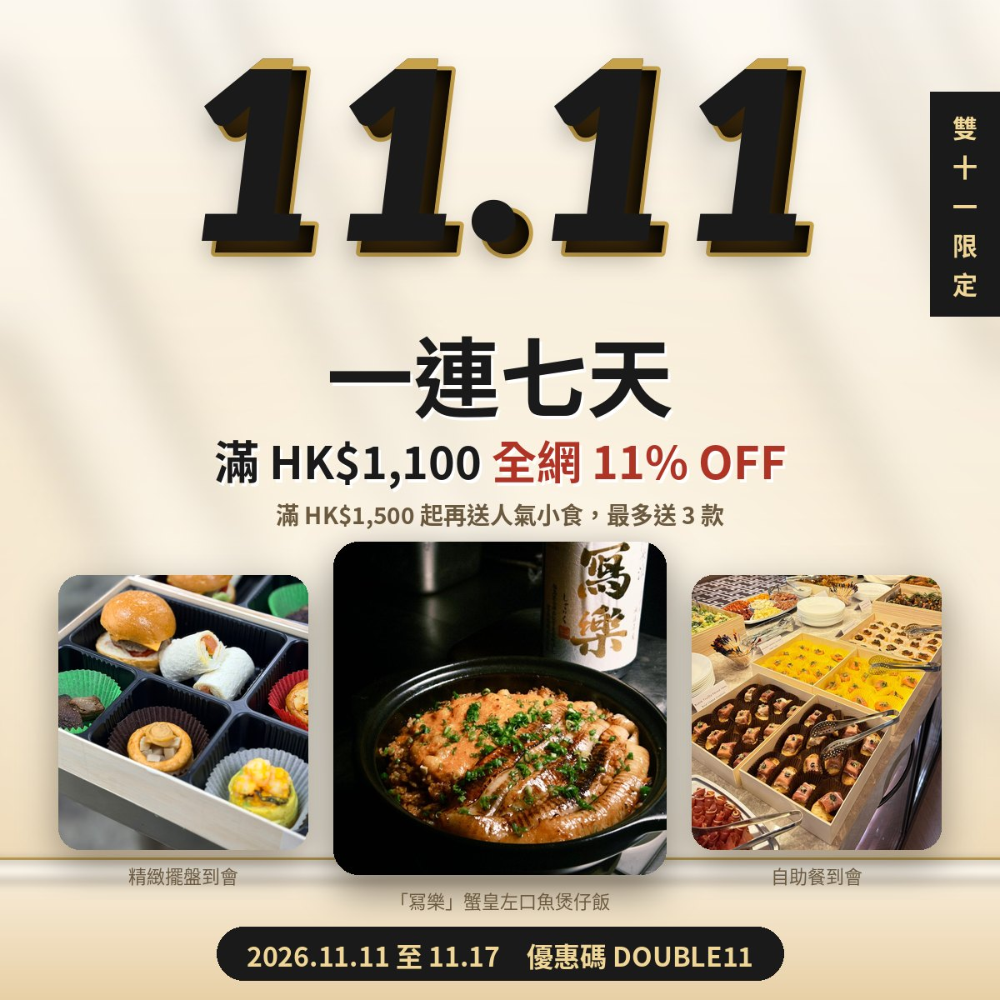
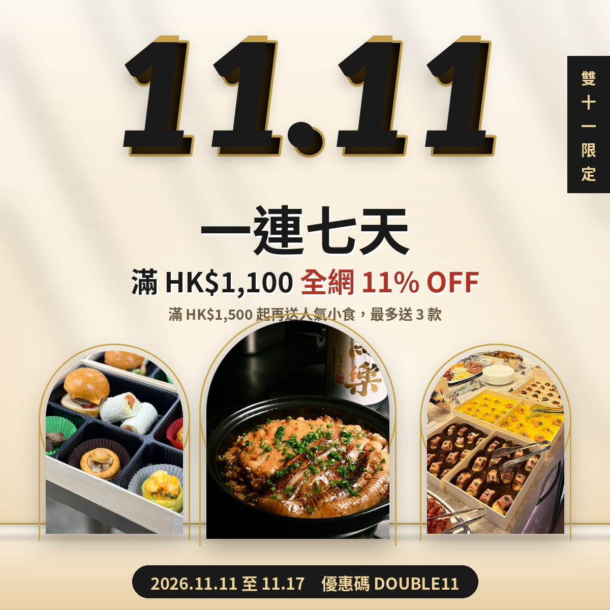
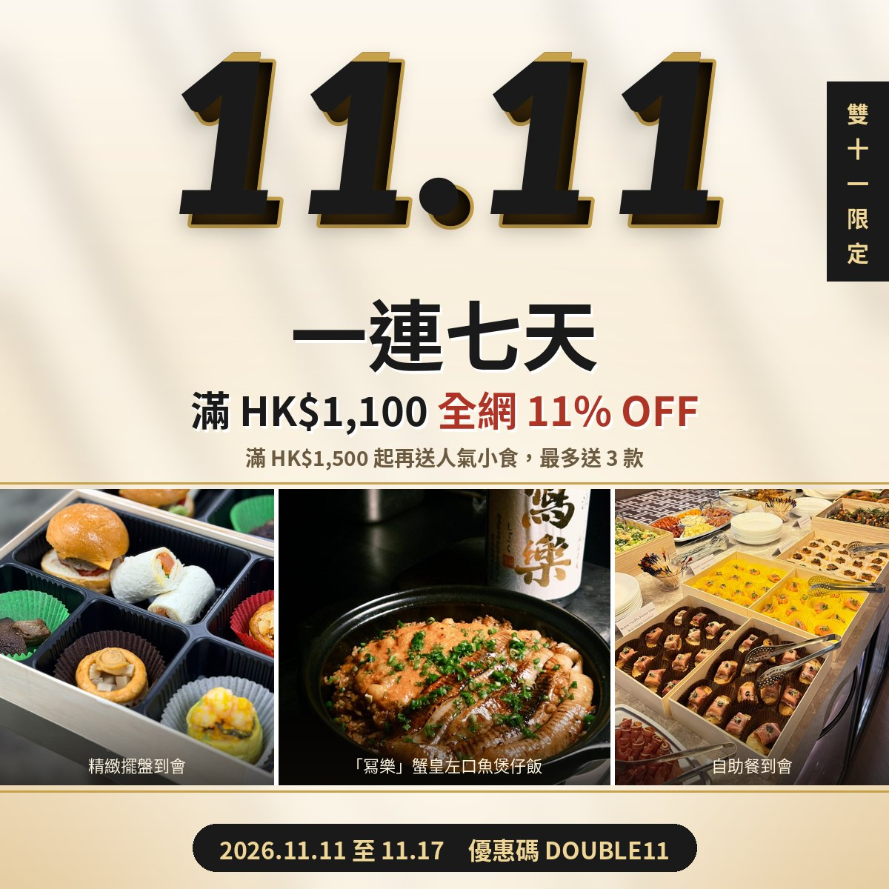

只改三張主圖嘅排法同 KV 下面白色區（多謝語＋按鈕），文字內容不變（Design 1 及 3 加咗相片說明細字）。設計參考 Four Seasons Sydney 的留白及層次。
三張相去掉金框，改用圓角加柔和陰影，中間煲仔飯放大、稍微重疊；每張相下面加細字說明場景。白色區：文字收窄置中，上面加金色短線，下面黑色大按鈕。最乾淨、最似你參考嗰張 11.11 圖。

多謝你一直支持 Kitchen AO。雙 11 一連七天，網站下單滿 HK$1,100，輸入優惠碼 DOUBLE11 即享全網 11% OFF；滿 HK$1,500 起更可額外獲贈人氣小食，會員優惠亦照常享用。
🔥 立即網站下單三張相放入金色幼線拱形窗，中間最高，似酒店建築拱門（參考 Four Seasons）。白色區：改做米色卡片，金邊框，加英文小標，按鈕黑底金邊金字。最優雅、最高級。

KITCHEN AO・DOUBLE ELEVEN
多謝你一直支持 Kitchen AO。雙 11 一連七天，網站下單滿 HK$1,100，輸入優惠碼 DOUBLE11 即享全網 11% OFF；滿 HK$1,500 起更可額外獲贈人氣小食，會員優惠亦照常享用。
🔥 立即網站下單三張相連成一條橫跨全闊嘅全景，中間白幼隙，上下金幼線，相底漸黑加白字說明。白色區：改做黑色底加金線，金色按鈕，同下面四重賞形成對比。最有氣勢。

多謝你一直支持 Kitchen AO。雙 11 一連七天，網站下單滿 HK$1,100，輸入優惠碼 DOUBLE11 即享全網 11% OFF；滿 HK$1,500 起更可額外獲贈人氣小食，會員優惠亦照常享用。
🔥 立即網站下單